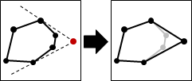
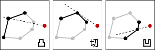

演算法
這是online演算法，隨時維護一個凸包。每當輸入一點，如果此點在凸包內部就直接捨棄；不然就計算此點與當前凸包的兩條切線，然後更新凸包。

要找切線，窮舉切點即可。切點的左右鄰點都在切線同側，反之則否，判斷僅需O(1)時間。要小心切線與邊重疊的情況。

凸包的資料結構採用circular list，找到兩個切點後，移除其間的連續凹點僅需O(1)時間。總時間複雜度是O(N^2)。
改進
換個角度想，想要找到新凸包，直接窮舉新凸包的頂點不就好了？
以試誤法嘗試舊凸包的每個頂點。以當前輸入點為基準，若為凸面、切點，則留下；若為凹面，則捨棄。最後就得到新凸包。
如此一來就不需要特殊資料結構了。時間複雜度是O(N^2)。
加速
以當前輸入點為基準，切點的一側是凸面，另一側是凹面，切點恰為凹凸分際。故可用Binary Search找切點。
凸包的資料結構可以採用Splay Tree，找切點、移除連續頂點僅需O(logN)均攤時間。總時間複雜度是O(NlogN)。
Splay Tree作排序時，可以參考凸包最左下點，以角度排序。
預先排序
預先按照XY座標排序所有點（平移的掃描線），此演算法便與Andrew's Monotone Chain大同小異，時間複雜度為O(NlogN)。
預先排序之後，當前輸入點必在凸包外部（點不重複時）、必有兩條切線。
預先隨機排列
隨機排列、排序，兩者概念相反。
預先隨機排列所有點，則第i回合固定新增兩點、平均掃描N/i點，平均時間複雜度為O(NlogN)。推廣到三維空間仍然如此。